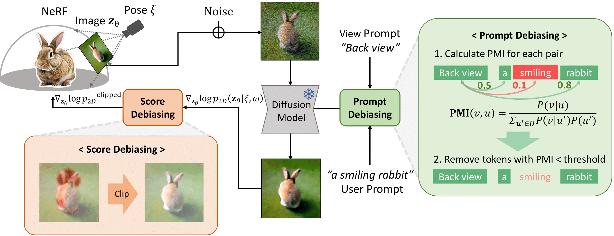
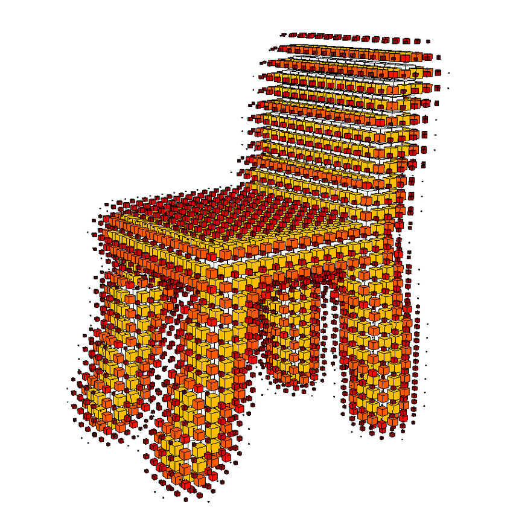
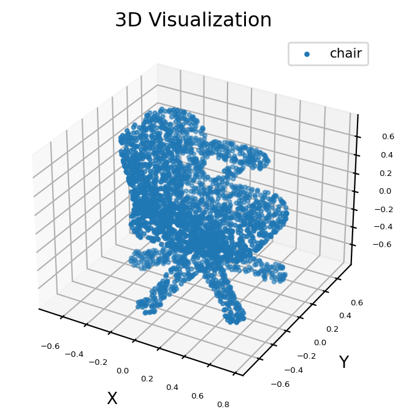
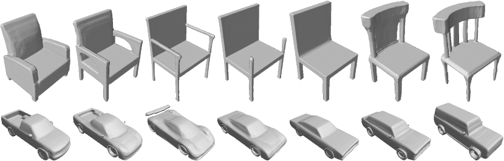
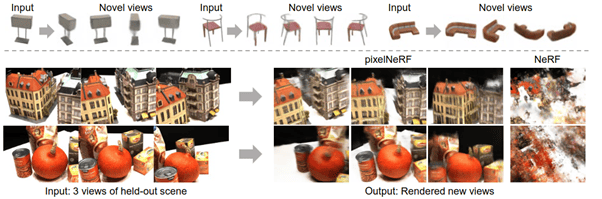

The 3D Generation Frontier
While generative AI has achieved breathtaking fidelity in 2D image synthesis, the transition to native 3D content remains one of the most significant hurdles in modern machine learning. The task is deceptive: it is not merely about adding a depth dimension, but about modeling the underlying structural and geometric consistency that defines our physical reality.
Defining the Task & Applications
At its core, 3D generation is the process of mapping a sparse input—such as a text prompt or a single 2D image—into a complete, navigable 3D asset. This is the "Black Box" challenge: hallucinating the hidden viewpoints and internal structures of an object that we only have partial information about.
- Entertainment: Moving from month-long manual modeling to "one-shot" asset creation for AAA games and VR.
- Robotics: Creating high-fidelity synthetic "Sim-to-Real" environments for training autonomous agents.
- Industrial Design: Real-time prototyping and "Digital Twins" for architectural visualization and 3D printing.
The Fundamental Scarcity: The Data Gap
In 2D computer vision, we are spoiled by the abundance of the internet. Datasets like LAION-5B provide billions of paired image-text examples. In contrast, the 3D world faces a Data Gap of roughly 500:1. High-quality 3D assets are manually authored and scarce; even the largest datasets like Objaverse only scratch the surface of real-world diversity.
Lifting Intelligence: Leveraging 2D Priors
Because we couldn't train 3D models from scratch, the research community's first breakthrough came from "borrowing" the intelligence of pre-trained 2D diffusion models. The core idea is optimization by rendering: leverage the fact that a model like Stable Diffusion already "knows" what a 3D object should look like from every angle.
The 2D-to-3D Lifting Workflow
Methods like DreamFusion established a standard four-step workflow to bridge this gap:
- Initialize: Start with a 3D representation (usually a Neural Radiance Field, or NeRF).
- Render: Project the 3D volume into a 2D image from a random camera viewpoint.
- Criticize: Pass this 2D slice to a "Teacher" (a frozen 2D Diffusion model) to see if it looks realistic.
- Backpropagate: Use the teacher's feedback to update the internal 3D parameters.
Score Distillation Sampling (SDS)
The mathematical engine of this lifting is Score Distillation Sampling (SDS). It provides a gradient update from the 2D teacher to the 3D representation. It essentially says: "Shift the geometry of this 3D model so that this 2D projection looks more like the text prompt." It is a distillation of 2D knowledge into a 3D volume.

SDS Workflow: 3D Representation → 2D Rendering → 2D Diffusion FeedbackCritical Failures of Lifting Methods
While innovative, these methods suffer from three fatal flaws that prevent them from being "production-ready":
- The Janus Problem: Since the 2D teacher only judges one slice at a time, it lacks global 3D awareness. This leads to objects with multiple faces (multi-headed geometry).
 A 3D model showing multi-faced geometry (The Janus Problem)
A 3D model showing multi-faced geometry (The Janus Problem)
- Optimization Latency: Because these models optimize rather than infer, generating a single asset can take 30 to 60 minutes of GPU time.
- The SDS Trade-off: The resulting geometry often appears "oversaturated" or "cartoonish." To satisfy all viewpoints simultaneously, the model often settles for an "average" look that loses fine texture.
Transitioning to "Native" 3D Generation
The failures of 2D lifting led to the emergence of Native 3D models. What makes a model native? Unlike lifting methods that "trick" a 2D model into seeing depth, native models are trained directly on 3D geometric data. They don't guess—they understand space.
| Feature | 2D-Lifting (Optimization-based) | Native 3D (Inference-based) |
|---|---|---|
| Knowledge Source | 2D Image Priors (Implicit) | 3D Geometric Datasets (Explicit) |
| Process | Iterative Optimization | Feed-forward Inference |
| Inference Speed | Minutes to Hours | Milliseconds ("One-shot") |
| Geometric Consistency | Heuristic (prone to Janus) | Inherently Consistent |
Early Representations: Voxels & Point Clouds
To understand the journey of native 3D generation, we must first look at the most basic ways computers store 3D data. Think of these as the "atoms" of the 3D world.

Voxel Grid

Point Cloud
- Voxels (Volumetric Pixels): A voxel is a 3D grid of volume elements. Each "cell" in the grid contains information about whether it is empty or filled, and what color it is.
Pros: They are mathematically structured just like 2D pixels, making it easy to use powerful 3D Convolutional Neural Networks (CNNs).
Cons (The Memory Wall): Memory scales at O(N3). If you want to double the resolution of your model, you need 8x more memory. Achieving high-fidelity (e.g., 5123) is currently impossible on consumer GPUs. - Point Clouds (Sparse Coordinates): Instead of a cloud of individual points floating in space, each with an (x, y, z) coordinate on the surface of an object.
Pros: Extremely memory efficient because you only store data where the object actually exists.
Cons (Lack of Topology): Point clouds have no "skin" (manifold surface) connecting the dots. They are "hollow," which makes them difficult to use for physics simulations (the object has no solid boundary) or high-quality rendering without complex post-processing.
Continuous Representations: SDFs & NeRFs
To move past the "discrete" limitations, researchers developed Continuous Representations. Instead of storing data points, these methods use a Neural Network as a mathematical function to define the shape.
- Signed Distance Functions (SDFs): An MLP that predicts the distance to the nearest surface for any point (x, y, z).
- If the value is negative, you are inside the object; if positive, you are outside. This provides a mathematically smooth surface.
- Neural Radiance Fields (NeRFs): Representing a 3D scene as a continuous volumetric density and color field.
- NeRFs simulate how light travels through space. This allows for photorealistic rendering with complex transparency.

SDF Surface: Constant distance prediction for smooth boundaries.

NeRF Volume: Dense radiance field capturing complex lighting.
Pros: These methods are resolution-independent. Because they do not rely on fixed grids, you can "zoom in" forever and see infinite detail with smooth geometry.
Cons: It is notoriously hard to "generate" a new MLP from scratch. To create something new, you usually require a known code or a template to guide the network.
Why "Direct" 3D Isn't Enough
Despite the elegance of these representations, generating raw 3D data directly is a mounting challenge due to three major bottlenecks:
- Dimensionality Constraint:
- Cubic Scaling (O(N3)): Memory and compute requirements grow exponentially with resolution.
- Resolution Ceiling: Standard hardware cannot handle high-fidelity voxel grids (e.g., 5123 or higher).
- Geometric Discontinuity:
- Point Clouds: Lack of connectivity makes surface reconstruction and physics simulation difficult.
- Meshes: Non-differentiable nature makes them difficult to optimize directly with gradient-based methods.
- The Diversity Gap:
- Training a single "direct" model across thousands of categories (Open-vocabulary) is computationally unstable.
- Direct methods often require category-specific templates (e.g., only chairs or only cars).
We've reached a limit: high-resolution, diverse 3D generation requires a smarter approach—compressing 3D data into a manageable **Latent Space**. This is the next frontier of research.